Vie étudiante
Une diversité associative au service des étudiants
Une diversité associative au service des étudiants
Situé dans le Grand Paris, le campus de l’Efrei à Villejuif offre aux étudiants un environnement favorable à la pédagogie et à l’enseignement, avec des infrastructures neuves, modernes et innovantes.
Campus Villejuif
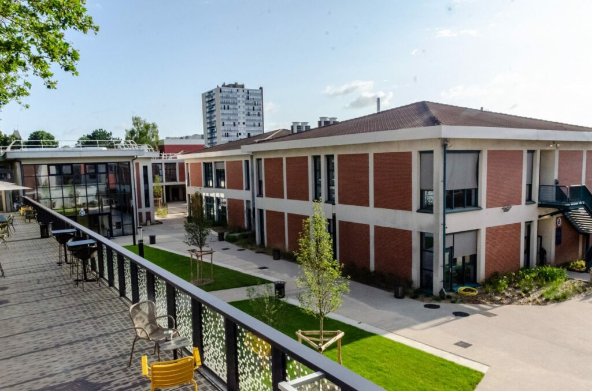
Le campus de Villejuif a été complètement rénové ces dernières années, offrant une large gamme de services aux étudiants, y compris des espaces de coworking, d'étude, de détente, de développement de prototypes et des espaces communautaires…
L'EFREI dispose de plusieurs laboratoires informatiques équipés de Mac, offrant aux étudiants un environnement de travail professionnel et moderne. Ces salles sont accessibles tout au long de l'année et permettent de travailler sur des projets de développement, de design, de cybersécurité et bien plus encore. Grâce à ces infrastructures de pointe, les étudiants peuvent s'exercer sur les mêmes outils que ceux utilisés en entreprise, favorisant ainsi une montée en compétences rapide et efficace.
labs informatiques
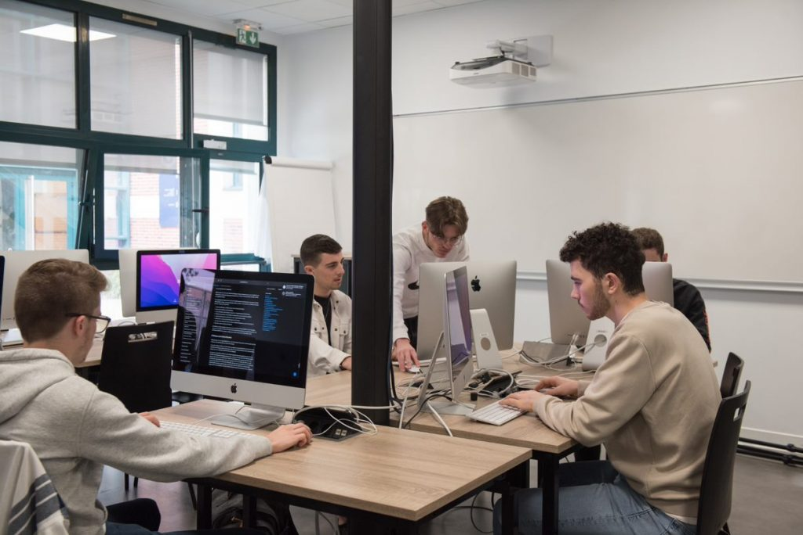
espaces de coworking
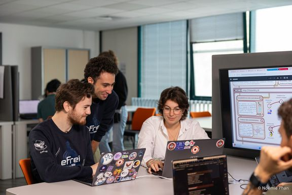
Les étudiants disposent également de plusieurs salles qui leur sont réservées. Avant tout, ces espaces sont des lieux d'échange, offrant divers services et dédiés à différentes activités : travail en groupe, réunions pour les associations, informations sur les événements, photocopies, concerts…
L'innovation-lab met à disposition de nombreuses ressources technologiques pour expérimenter et concrétiser vos projets. Retrouvez des machines à commande numérique telles que des imprimantes 3D, des découpeuses laser, des casques VR et bien d’autres.
innovation-lab
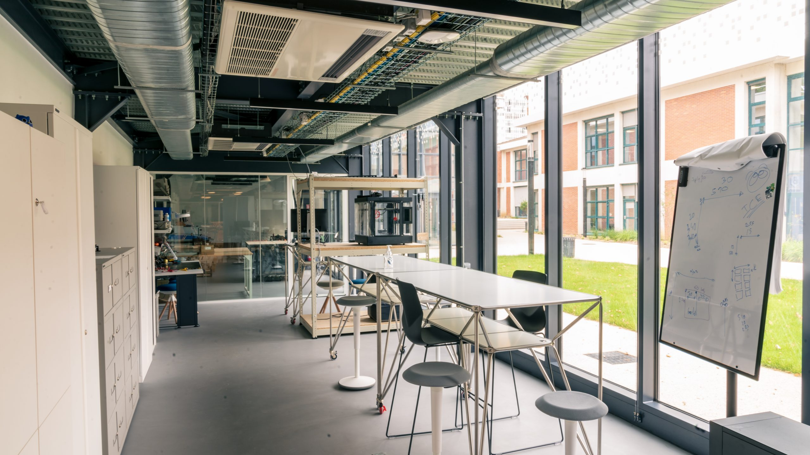
▶
Clubs et associations
Au sein de l'efrei, nous comptons plus de 60 associations et clubs. Vous trouverez à coup sûr votre bonhneur parmi toute ses associations. Et si vous n'êtes toujours pas rassasiés, vous pouvez toujours en créer une.
Parmi elle, se trouve bon nombre d'associations spécifiques au domaine de l'informatique:
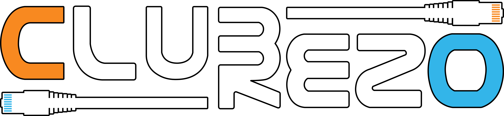
Pour le Club-Rezo, jouer seul, c’est bien mais jouer à plusieurs, c’est mieux ! Cette association organise les célèbres rézals,
des soirées jeux et pizzas sur le campus, ouvertes à tous !
Ces soirées sont l’occasion de rencontrer de nouvelles personnes,
de composer de nouvelles équipes et de se confronter aux autres écoles, le tout dans la bonne humeur. En parallèle, l’association
est très en lien avec le service informatique de l’école, notamment sur des projets réseau et techniques.
CTfrei est l’association qui promeut la pratique des CTF (capture the flag) auprès des étudiants et les sensibilise à la cybersécurité.
Elle est en lien avec l’Efrei pour la participation à de nombreux événements CTF universitaires.
Chaque année, une équipe est formée et
entraînée par des professionnels de la cyber pour se rendre à la compétition du InCyber (anciennement FIC) à Lille.
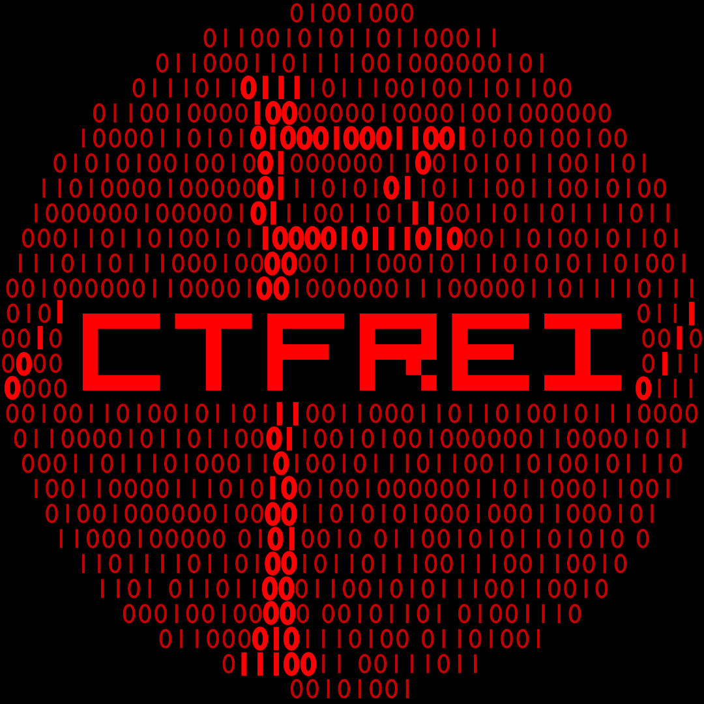
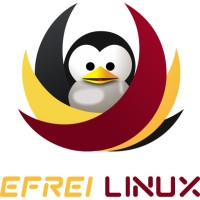
EFREI Linux diffuse l’esprit du monde du libre auprès des étudiants, tout le long de l’année.
Nous sommes donc le Groupe d’Utilisateurs de
Logiciels Libres (GULL) d'EFREI Paris.L’association a été créée pour permettre aux élèves d'EFREI Paris d’améliorer et de partager leurs
connaissances et compétences techniques.
EFREI Competition Team, l'équipe de compétition de l'école qui bénéficie d'un encadrement par le département informatique pour la participation à des concours.
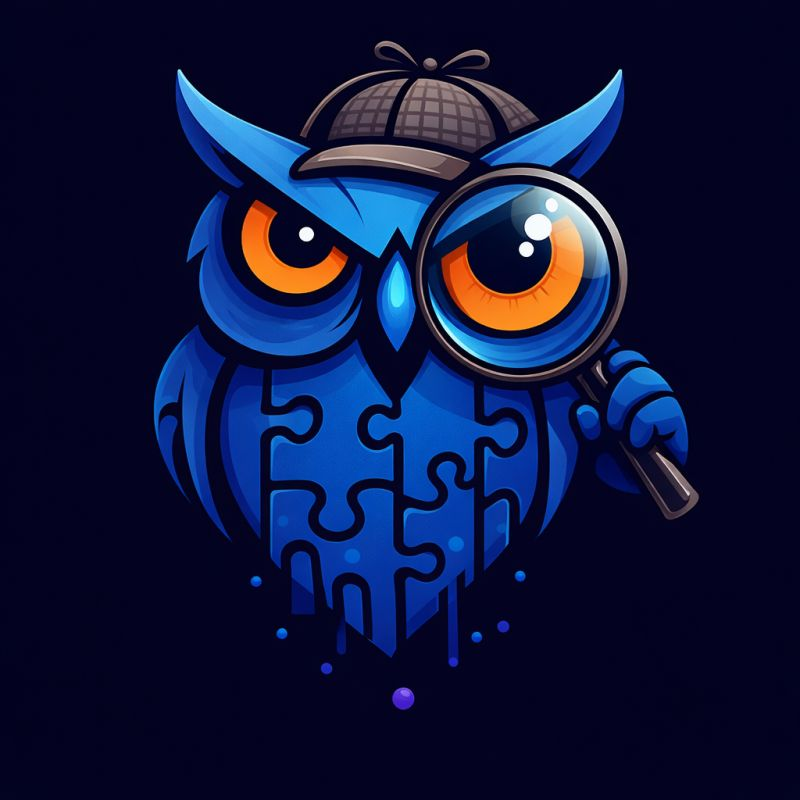
Pour plus d'informations
▶
Témoignages
"L'EFREI est une école où l'on apprend vraiment, avec des projets concrets et une vraie vie associative. Je recommande !"
"L'ambiance entre étudiants est top, et les associations permettent de développer des compétences qu'on ne trouve pas en cours."
"Je suis 100% satisfaite de l'Efrei. On nous apprend efficacement la théorie et la pratique, les projets en équipe et les associations favorisent le travail de groupe, l'entre-aide et une bonne ambiance entre les promos."
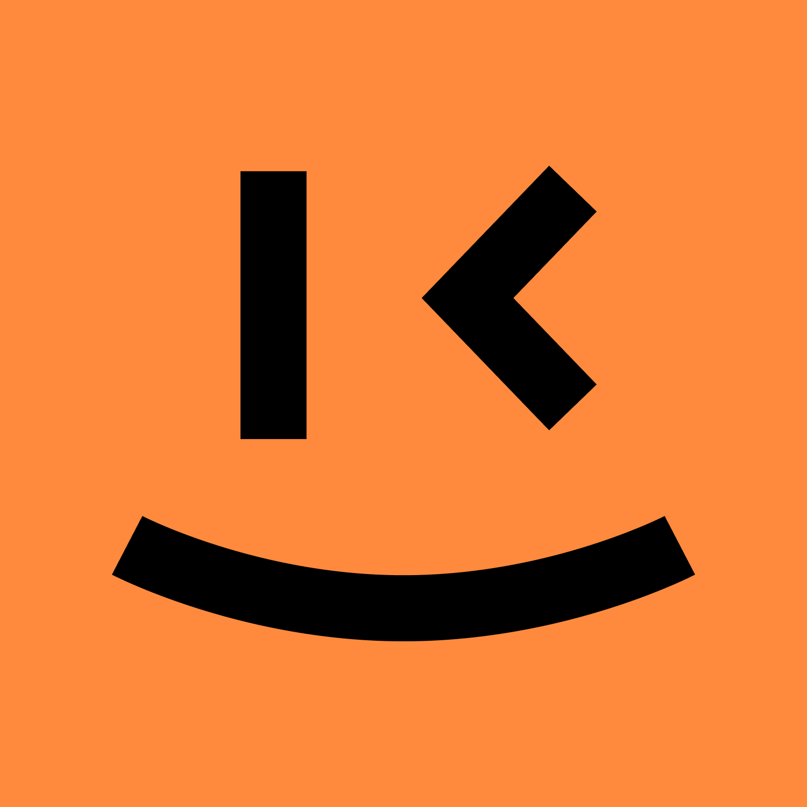
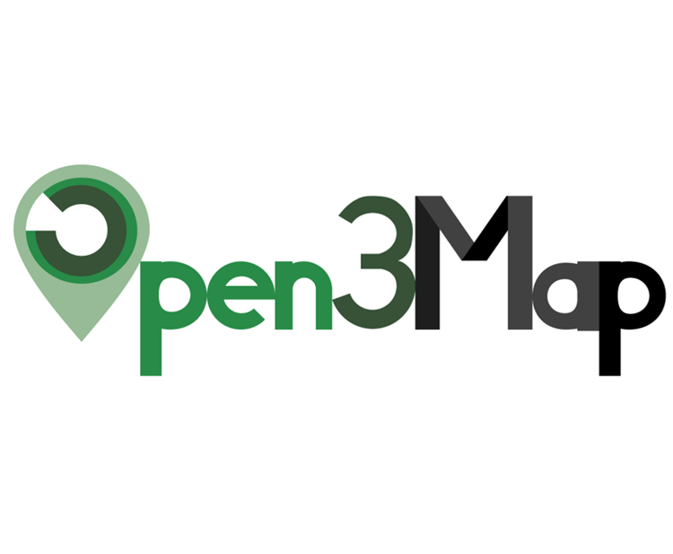
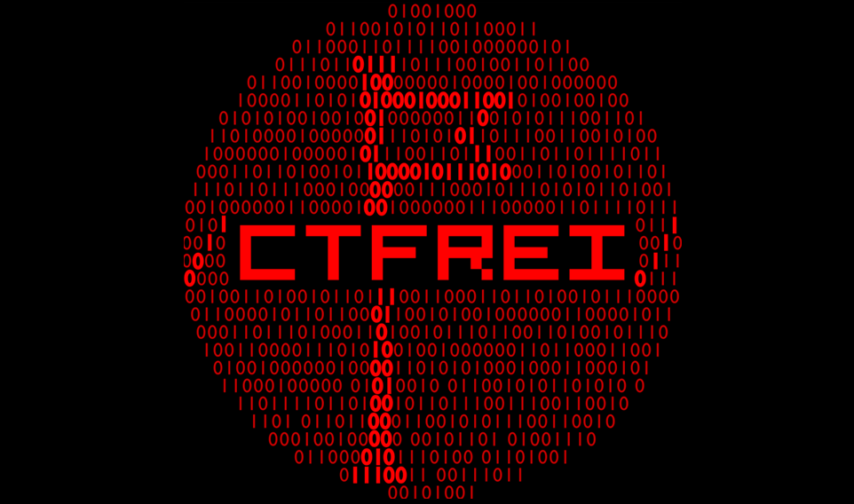